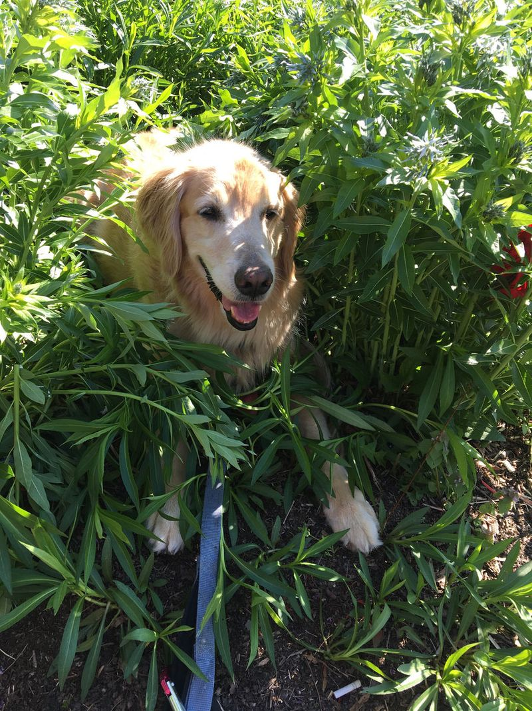

Manuscript title
Ages 4–7~450 wordsFiction
A one- or two-sentence hook: who the child is, what they want, and what stands in the way.
Children's book author, writing imaginative, thoughtful stories about family, loyalty, and belief.
What changed: same colors, fonts, and wheat photo as the current site, rearranged so the photos lead. Google will now show "Liz Sites, Children's Book Author" instead of "Personal Details."
While teaching K and 1st grades, I fell in love with writing for and with children. Although I had enjoyed writing from a young age, and taken creative writing classes in college, it was teaching the process of writing to young kids that changed things. There is nothing like a harmony of 20-some busy bodies in various stages of a Writer's Workshop where kids are learning to share their own stories.
Now I share the magic of writing with my own children, and devote my time to creating stories with the goal of sharing beauty and connection with children.

I grew up in Washington, DC, met my husband while living in North Carolina, and now live in a 1908 former home of a railroad conductor in Falls Church, Virginia. I am a Catholic, multiple-pet-owning, bluegrass-listening, outdoor-loving mother of three.
Young Folk, JJ Heller, Beethoven Blues by Jon Batiste, and Tchaikovsky's ballets
anything by April Pulley Sayre, Deborah Underwood, Julie Fogliano, G. Brian Karas, and Aiko Ikegami
My literacy credentials include a B.A. In Early Childhood Education from Wake Forest University, a M.Ed. in Early Literacy Education from the University of Virginia, and National Board Certification in Literacy.
I'm a member of Society of Children's Book Writers and Illustrators and have been published in The Reading Teacher magazine. I also write literacy blog posts (link below).
One correction: the current site says Society of Children's Book Authors and Illustrators. The organization's name is Writers, so that one word is fixed. Everything else on this page is Liz's text as written.
A one- or two-sentence hook: who the child is, what they want, and what stands in the way.
A one- or two-sentence hook.
A one- or two-sentence hook.
Replaces "Visit Again To Hear About My Upcoming Published Works!" Agents and editors look here first. Fill in a title, age range, word count, and hook for each manuscript, or delete the cards and keep just the line above.
Breaking Down The Developmental Reading Perspective for Parents
Read here ↗Hot Children's Books By Topic
Read here ↗During Coronavirus & Beyond
Read here ↗Developmentally-Appropriate Picks
Read here ↗Links fixed: The Fashion Magpie moved to magpiebyjenshoop.com, and the old Books for Babies link was landing on its homepage. These now go straight to each post.
Young writers plan, draw, and draft a story of their own, then share it with the group.
A picture-book read-aloud, followed by questions about how stories are made.
A talk for parents on choosing books and building reading habits at home.
New, and optional: suggested offerings built on Liz's Writer's Workshop experience. Rewrite in her words, or remove until she's ready to book visits.
Not until we are lost do we begin to understand ourselvesHenry David Thoreau
For agent and editor inquiries, school visits, or just to say hello.
Choose a public email. The old contact block had a Submit button but no visible fields, so a plain address is more reliable.